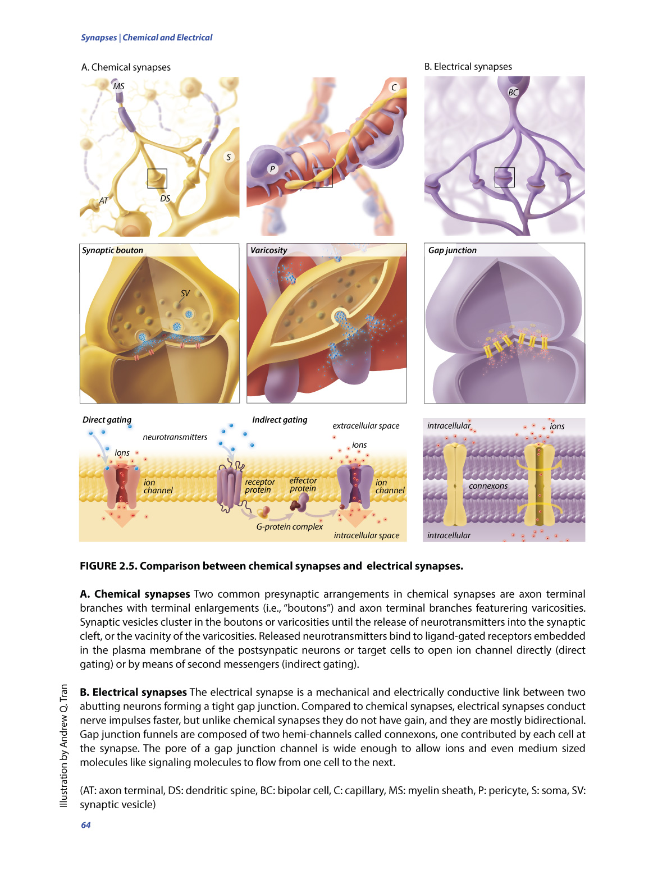
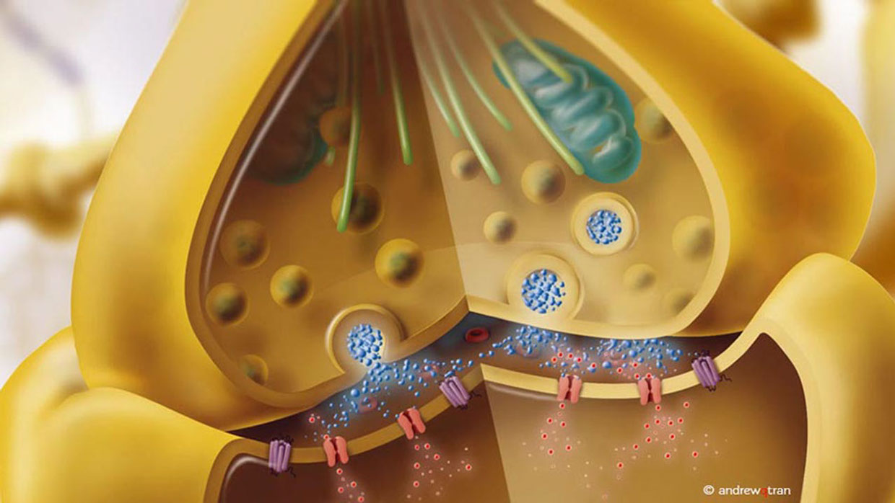
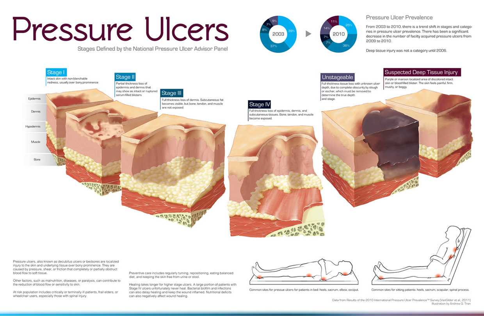
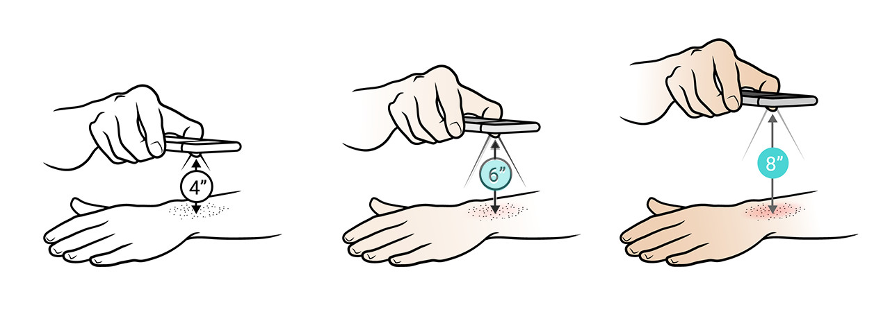
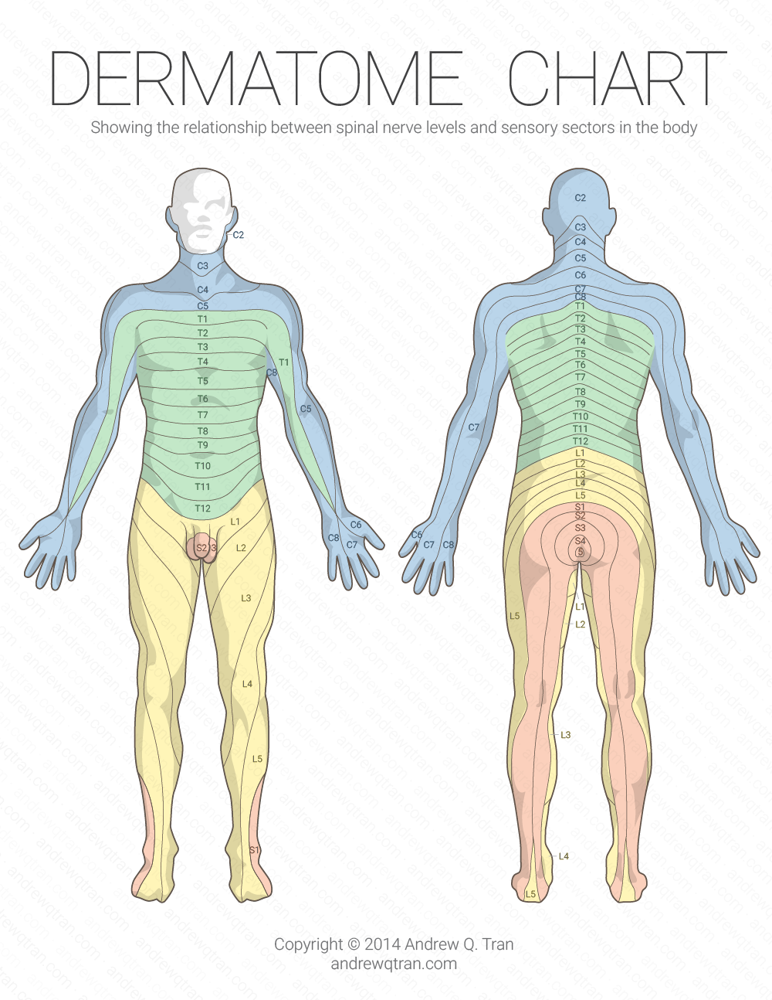
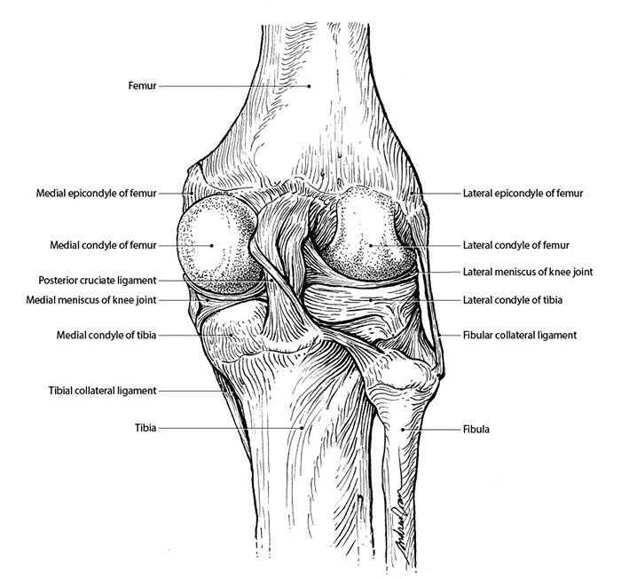

Summary
The process for illustration is not too different from that of design. Many of illustrations required me to research, communicate and collaborate with domain experts, sketch, revise and iterate, and deliver the final product. As a professionally trained medical illustrator, I am familiar with and knowledgeable on both medical and scientific topics, allowing me to communicate with clients and stakeholders more effectively. Below are some of my work.
Low-poly brain and heart
This was an experiment with creating low-poly illustrations and typography in Adobe Illustrator. Both are based on 3D models I've created in the past.
3D Biomedical Still Life
I modeled the vertebrae, flask, surgical tool (aortic clamp), and the heart from scratch. The liver was 3D scanned, and the hip bones were extracted from a CT scan from OsiriX; both were cleaned up and retopologized. I created all texture, lights, and composition for the final still life render.
3D Publication Covers
These are mock covers. The "genetic brain" artwork was featured in a Science Magazine article, and the "purple brain" became the cover for a 3-volume encyclopedia on Brain Mapping.
3D neuron sketches
These sketches were used to pitch for the illustration used on the global GAAIN website, and also led to a short interstitial animation.
Synapses
This illustration shows a comprehensive comparison between chemical and electrical synapses.


Pressure Ulcers
This illustration shows the pathological process of pressure ulcers, along with infographic on the prevalence and common occurrence sites of the disease.

Line Illustrations
Here are some of the more simple illustrations using mainly line work.
Illustration used for coach mark in FirstDerm's mobile app.

